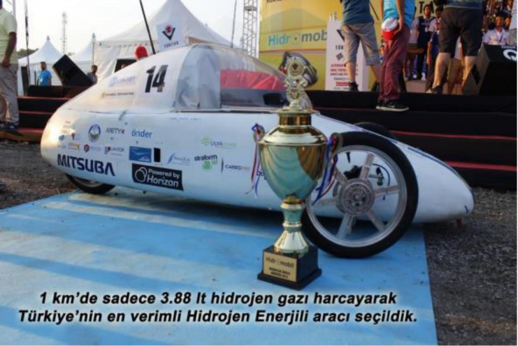

TÜBİTAK ALTERNATİF ENERJİLİ ARAÇ YARIŞLARI KÖRFEZ YARIŞ PİSTİ, İZMİT
| Tarih | Aracımız | Derece |
|---|---|---|
| 2012 | SİGMA | En İyi Tasarım Ödülü |
| 2013 | HİDROİST | - |
| 2014 | HİDROİST'14 | Türkiye Birinciliği |
| 2015 | HİDROİST'15 | Türkiye Birinciliği |
| 2015 | HİDRO1453 | Avrupa 5.liği |
| 2016 | REV.16 | Avrupa 5.liği |
| 2016 | REV.16 | SHELL-ECO MARATHON TÜRKİYE BİRİNCİLİĞİ |
| 2016 | REV.16 | TEKNİK İNOVASYON ÖDÜLÜ |
| 2017 | REV.17 | SHELL-ECO MARATHON TÜRKİYE BİRİNCİLİĞİ |
SHELL ECO-MARATHON EUROPE 2015-2016 ROTTERDAM, HOLLANDA-İNGİLTERE, LONDRA
İlk yurt dışı deneyimimiz olan bu yarışta AVRUPA 5.’liği elde ettik. Aldığımız dereceyle ülkemizi temsil eden en iyi Türk Takımı olmanın gururunu yaşıyoruz. Ayrıca harcamamızı 30 litre düşürerek Londra yarışlarında DÜNYA 5.’liği elde ettik.
HİDROİST’İN İLK ARACI "SİGMA"
HİDROİST’İN İKİNCİ ARACI "HİDROİST"
HİDROİST’İN ÜÇÜNCÜ ARACI "HİDROİST’14"
HİDROİST’İN DÖRDÜNCÜ ARACI "HİDRO1453"
HİDROİST’İN BEŞİNCİ ARACI "REV.16"